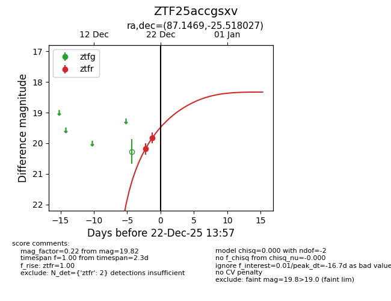
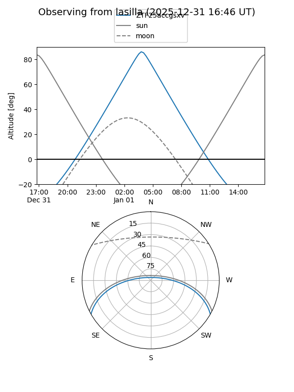
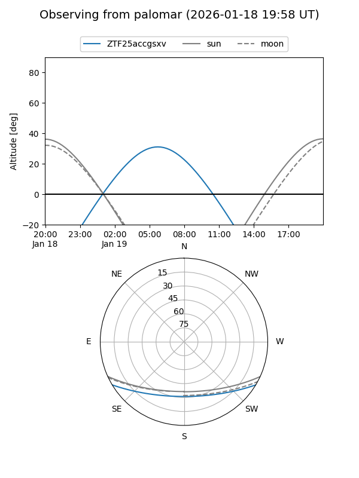
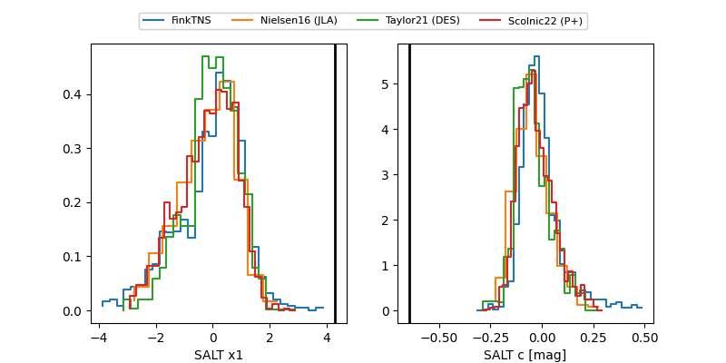

ZTF25accgsxv
Target ZTF25accgsxv at 2025-12-21 08:28
Aliases and brokers:
FINK: fink-portal.org/ZTF25accgsxv
Lasair: lasair-ztf.lsst.ac.uk/objects/ZTF25accgsxv
ALeRCE: alerce.online/object/ZTF25accgsxv
alt names
ZTF25accgsxv (ztf,fink_ztf)
Coordinates:
equatorial (ra, dec) = 87.1469,-25.51803
equatorial (HMS+DMS) = 05:48:35.26,-25:31:04.90
galactic (l, b) = (230.3151,-24.45277)
Flags:
Photometry:
last ztfr=19.82
2 ztfr detections
Lightcurve

Visibility


Additional plots
